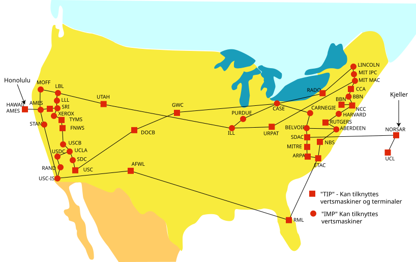

História das Redes
Veja:
Página Inicial
Tecnologias
Voltar para atividades
O desenvolvimento das redes começou na década de 1960 com projetos militares.

Principais marcos:
ARPANET (1969)
Criação do TCP/IP (1970s)
Popularização da Internet (1990s)